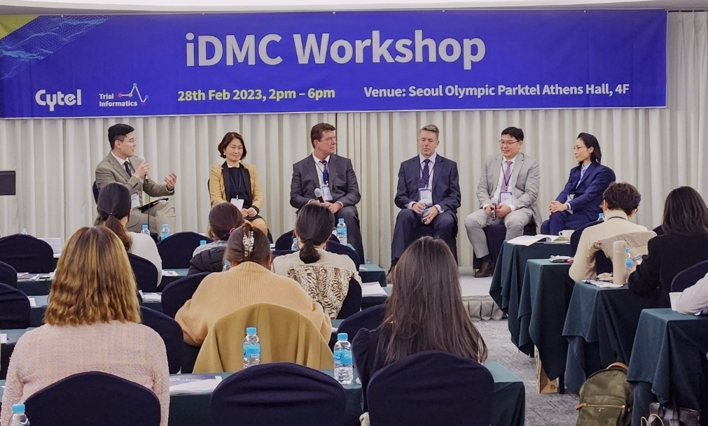

About
Data Scientist empowering Digital Transformation in bricks-and-mortar approaches to business and research; Applied Econometrician enthusiastic of exploring casual problems with scientific rigors; R Shiny Developer writing interactive web apps focused on data management and statistical visualizations, especially in the area of health science
Please visit here for my sample Shiny work, created to support research scientists to be more interactive on their research output with outside worlds through a Shiny app.
Professionally, I’m currently working as a Digital Product Manager for Trial Informatics, a Korea-based tech startup in the biopharma research industry that is digitally transforming the way of running/overseeing clinical trials.
Contact:
henrykye301@gmail.com (personal) henry.kye@trialinformatics.com (business)
News
Mar. 5, 2023
I recently served as a moderator for a panel discussion at a workshop, co-hosted by Trial Informatics and Cytel, a global statistical software company in life science. It was a bit challenging but exciting! I would like to share the moment:

Experience
Digital Product Manager | Trial Informatics, Seoul, South Korea | Oct 2022 – Present
Data Scientist | Datacrunch Global, Seoul, South Korea | May 2022 – Sept 2022
Postdoctoral Researcher | Aalto University School of Business, Espoo, Finland | Sept 2021 – May 2022
Education
PhD in Economics | Rutgers University, New Brunswick, NJ | Sept 2015 – Oct 2021
MA in Economics | Soongsil University, Seoul, South Korea | Mar 2013 – Aug 2015
BA in Economics | Soongsil University, Seoul, South Korea | Mar 2007 – Feb 2013